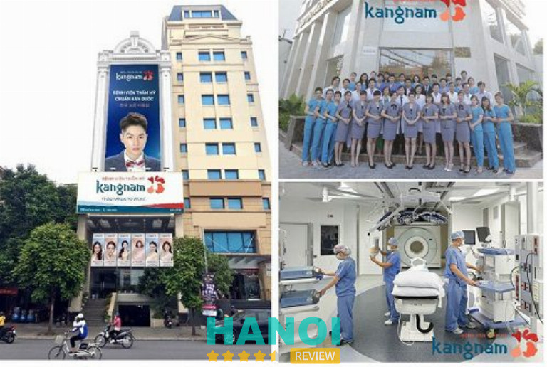
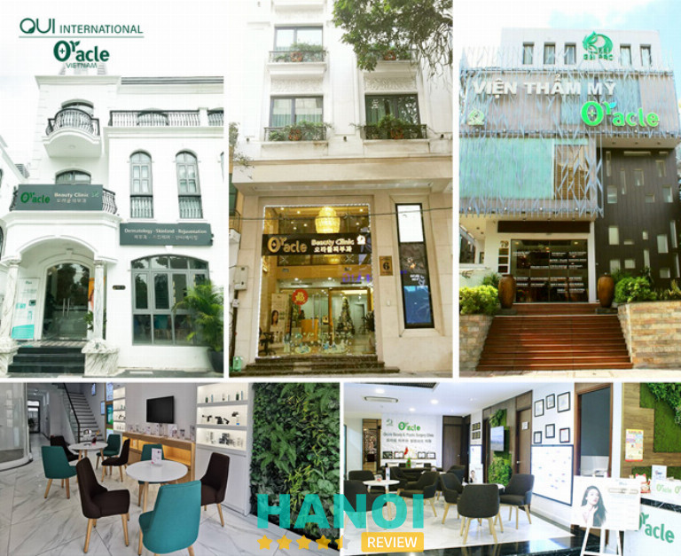

10 Địa chỉ tạo má lúm đồng tiền tại Hà Nội uy tín, đẹp tự nhiên
Má lúm đồng tiền theo nhân tướng học chính là thể hiện cho sự giàu sang. Theo một số quan niệm còn cho rằng đây chính là biểu tượng tài lộc, thịnh vượng. Điều này còn giúp cho gương mặt của bạn trở nên thu hút và duyên dáng hơn rất nhiều. Một nụ cười tỏa nắng, một nét duyên ngầm cũng chính là những gì mà người sở hữu má lúm đồng tiền có được.
Top 10 cơ sở tạo má lúm đồng tiền ở Hà Nội an toàn nhất
Đối với phụ nữ thì má lúm đồng tiền chính là một trong những nét duyên gây sự chú ý cho nhiều người. Chính vì vậy, ngày nay phương pháp thẩm mỹ má lúm đồng tiền cũng trở thành một dịch vụ được nhiều người ưa chuộng. Điều này gây ra khó khăn cho các tín đồ làm đẹp vì không biết nơi nào thật sự uy tín và chất lượng.
Việc tiến hành phẫu thuật má lúm đồng tiền không đảm bảo đúng quy trình, có thể gây ra các biến chứng nguy hiểm trong và sau quá trình thực hiện. Nếu bạn đang tìm kiếm những địa chỉ đảm bảo chất lượng và uy tín thì hãy tham khảo ngay 10 địa chỉ mà HaNoiReview đã tổng hợp sau đây:
Bệnh viện thẩm mỹ Kangnam
Trong hành trình tìm kiếm một địa chỉ phẫu thuật tạo má lúm đồng tiền tại Hà Nội, Bệnh viện thẩm mỹ Kangnam dần trở thành một điểm đến được nhiều người lựa chọn. Với sự cam kết về chất lượng dịch vụ và sự chuyên nghiệp trong từng bước quy trình, đơn vị đứng vững trước sự cạnh tranh khốc liệt trong lĩnh vực thẩm mỹ hiện nay.

Tại đây, quy trình phẫu thuật tạo má lúm đồng tiền không chỉ đơn giản mà còn chi tiết và an toàn. Từ bước đầu tiên khi khách hàng bước vào cơ sở cho đến khi hoàn tất phẫu thuật, mọi thứ đều được thực hiện dưới sự giám sát chặt chẽ của đội ngũ chuyên nghiệp. Mọi máy móc, trang thiết bị và phòng phẫu thuật đều tuân thủ nghiêm ngặt tiêu chuẩn vô trùng, đảm bảo an toàn tối đa cho người bệnh.
Đội ngũ bác sĩ tại Bệnh viện thẩm mỹ Kangnam là những người có nhiều năm kinh nghiệm trong lĩnh vực thẩm mỹ. Họ không chỉ dừng lại ở những kỹ năng đã học mà luôn cập nhật, tiếp tục học hỏi các công nghệ làm đẹp mới nhất, giúp phẫu thuật đạt hiệu quả cao nhất.
Thông tin liên hệ:
- Địa chỉ: 190A – 190B Trường Chinh, Khương Thượng, Đống Đa, Hà Nội.
- Điện thoại: 024 7300 6466
- Email: tuvan@kangnam.vn
- Fanpage: FB.com/Thammykangnam
- Website: benhvienthammykangnam.vn
Viện thẩm mỹ Oracle
Trong lòng Hà Nội với hàng loạt các cơ sở thẩm mỹ hàng đầu, Viện thẩm mỹ Oracle đặc biệt nổi bật nhờ dịch vụ tạo má lúm đồng tiền độc đáo của mình. Đối với những ai đang tìm kiếm một địa chỉ phẫu thuật tạo má lúm đồng tiền tại Hà Nội thì chắc chắn không thể bỏ qua cơ sở này. Đây cũng là đơn vị được chứng nhận độc quyền chuyển giao công nghệ bởi Bộ Công Thương và Lãnh Sự Quán Hàn Quốc.

Quá trình tạo má lúm tại Hàn Việt được thực hiện một cách khoa học và tỉ mỉ. Đầu tiên, bác sĩ sẽ đo vẽ, xác định tỉ lệ má lúm phù hợp với khuôn mặt của bạn. Sau đó, má lúm sẽ được tạo ra dựa trên khoảng cách từ khóe miệng đến phần má. Má lúm đẹp tự nhiên, chỉ xuất hiện khi bạn cười hoặc khi cử động mặt.
Các dịch vụ hot có tại Viện thẩm mỹ Oracle:
- Căng bóng da Oracle Hàn Quốc: Bio-Whitening, căng bóng da Hàn Quốc..
- Liệu pháp tiêm thẩm mỹ: tiêm thẩm mỹ tạo mặt vline.
- Trẻ hóa da Hàn Quốc công nghệ Oracle: UI-Thermage, trẻ hóa da skin secret.
- Oracle Filler: nâng mũi bằng fillter.
- Trắng da an toàn: gói Mela Premium & SkinGym 365, trắng sáng da với công nghệ Perfect Skin.
Với chất lượng dịch vụ cao cấp nhưng mức giá lại rất phải chăng, nơi đây thực sự là một sự lựa chọn tuyệt vời cho những ai muốn sở hữu má lúm đẹp tự nhiên mà không muốn chi trả quá nhiều.
Thông tin liên hệ:
- Địa chỉ: Số 6 Triệu Việt Vương, P. Bùi Thị Xuân, Q. Hai Bà Trưng, Hà Nội
- Điện thoại: 1900 565 627
- Website: vienthammyoracle.vn
Thẩm mỹ viện Lilia
Với hơn 10 năm kinh nghiệm, Thẩm mỹ viện Lilia là một trong những địa chỉ thẩm mỹ uy tín và nhận được nhiều đánh giá cao về chất lượng dịch vụ cũng như thái độ phục vụ. Với phương châm mang lại vẻ đẹp hoàn hảo cho chị em, đơn vị luôn làm hài lòng khách hàng, kể cả những người khó tính nhất.
Sở hữu vị trí đắc địa trong lòng Hà Nội, Lilia luôn hi vọng cho những thành công rực rỡ khi được tiếp tục đồng hành cùng khách hàng để chinh phục vẻ đẹp vĩnh cửu. Đây cũng là động lực để Lilia nỗ lực hơn nữa trong việc bồi dưỡng đội ngũ bác sĩ, tư vấn viên cũng như cập nhật những công nghệ mới nhất, để cung cấp cho khách hàng những dịch vụ tốt nhất.
Các phòng ốc chức năng luôn được trang bị đầy đủ các máy móc thiết bị và dụng cụ y tế và tất cả đều đảm bảo sát khuẩn tuyệt đối. Đồng thời, các phòng phẫu thuật khép kín luôn đề cao tính vô trùng lên hàng đầu và sẽ không có bất cứ vấn đề nhiễm trùng xảy ra.
Thông tin liên hệ:
- Địa chỉ: Số 55A, Tô Hiến Thành, Hai Bà Trưng, Hà Nội.
- Điện thoại: 085 258 6666
- Email: thammylilia@gmail.com
- Website: thammyvienlilia.vn
GỢI Ý: 10 Bác sĩ phẫu thuật thẩm mỹ tại Hà Nội giỏi, mát tay nhất
Bệnh viện thẩm mỹ Thu Cúc
Khi nói đến dịch vụ thẩm mỹ ở Hà Nội, Bệnh viện thẩm mỹ Thu Cúc chắc chắn là một trong những cái tên hàng đầu được người dân tin tưởng. Và đặc biệt, nếu bạn đang tìm một địa chỉ phẫu thuật tạo má lúm đồng tiền tại Hà Nội chất lượng và uy tín, không thể không nhắc đến nơi này.

Tại Bệnh viện thẩm mỹ Thu Cúc, việc tạo má lúm đồng tiền không chỉ dành riêng cho một nhóm đối tượng nhất định. Dù bạn ở độ tuổi 18 hay cao hơn, dù bạn sở hữu hình dáng và kích cỡ má nào, dịch vụ ở đây đều có thể đáp ứng. Sự linh hoạt này giúp Bệnh viện thẩm mỹ Thu Cúc thu hút được một lượng lớn khách hàng đa dạng. Từ những người trẻ tuổi muốn nâng cao vẻ đẹp tự nhiên cho đến những người lớn tuổi muốn tạo nên một nét đẹp mới mẻ.
Với các phương pháp thẩm mỹ được thiết kế và tuân thủ theo chuẩn quy định của Bộ Y tế, mỗi bước trong quá trình này đều được thực hiện một cách tỉ mỉ, chuyên nghiệp. Kết quả là một dịch vụ phẫu thuật không xâm lấn, không để lại sẹo và đặc biệt, không có biến chứng.
Phần quan trọng nhất và cũng là điểm mà khách hàng yêu thích nhất, đó chính là má lúm đồng tiền sau khi phẫu thuật. Tự nhiên, mềm mịn và chỉ xuất hiện khi bạn cười hay cử động khuôn mặt, má lúm tại đây thực sự mang đến một vẻ đẹp tự nhiên, không giả tạo.
Thông tin liên hệ:
- Địa chỉ: 52 Lý Thường Kiệt, Hoàn Kiếm, Hà Nội.
- Điện thoại: 1900 558 870
- Fanpage: FB.com/thammythucuc.com.vn
- Website: thucucsaigon.vn
Viện thẩm mỹ quốc tế Dr. Han
Một trong những địa chỉ phẫu thuật tạo má lúm đồng tiền tại Hà Nội nhận được nhiều sự tin tưởng và ưa chuộng đó là Viện thẩm mỹ Dr.Han. Tại đây, dịch vụ tạo má lúm không chỉ giữ nguyên vẻ đẹp hiện đại, tự nhiên, mà còn đảm bảo độ nông sâu của má lúm phù hợp với tỷ lệ khuôn mặt và dáng má của mỗi khách hàng.
Để thực hiện điều này, Viện thẩm mỹ Dr.Han đã có một đội ngũ bác sĩ có nhiều năm kinh nghiệm, chuyên môn cao, luôn thực hiện việc đo, vẽ tỉ lệ má lúm một cách kỹ lưỡng, chính xác.
Hệ thống trang thiết bị và máy móc được nhập khẩu trực tiếp từ những quốc gia tiên tiến trong lĩnh vực thẩm mỹ chúng giúp việc tạo má lúm diễn ra nhanh chóng, chính xác và hiệu quả. Thêm vào đó, viện thường xuyên có những chương trình ưu đãi, giảm giá dành cho khách hàng, giúp tiết kiệm một khoản chi phí không nhỏ.
Thông tin liên hệ:
- Địa chỉ: Tầng 44 – Toà C5 D’Capitale 119 Trần Duy Hưng, Cầu Giấy, Hà Nội.
- Điện thoại: 1900 232393
- Fanpage: FB.com/DrHan.vn
- Email: cskh@drhan.vn
- Website: drhan.vn
Đọc thêm: 5 Địa chỉ thẩm mỹ vùng kín tại Hà Nội an toàn, làm đẹp nhất.
Viện Thẩm Mỹ Y Khoa Dr.Hải Lê
Với hơn nhiều năm kinh nghiệm trong lĩnh vực thẩm mỹ, Viện thẩm mỹ Y khoa Dr.Hải Lê đã trở thành một biểu tượng của sự chuyên nghiệp và đẳng cấp. Điều này không chỉ được thể hiện qua số lượng khách hàng đông đảo mà viện đã phục vụ, mà còn qua chất lượng dịch vụ và sự hài lòng mà họ mang lại cho mỗi người.
Quy trình phẫu thuật tạo má lúm đồng tiền tại Dr.Hải Lê được thiết kế một cách kỹ lưỡng, đảm bảo an toàn tối đa cho khách hàng. Với sự rút ngắn về thời gian đã giúp cơ sở thu hút một lượng lớn khách hàng, nhất là những người bận rộn mà không muốn dành quá nhiều thời gian cho việc làm đẹp.
Cơ sở vật chất và không gian của Viện thẩm mỹ Y khoa Dr.Hải Lê, mỗi chi tiết trong viện đều được chăm chút kỹ lưỡng, tạo nên một không gian thư giãn, giúp khách hàng cảm thấy thoải mái, dễ dàng tập trung vào quá trình thẩm mỹ cũng là một điểm nhấn đáng chú ý.
Thông tin liên hệ:
- Địa chỉ: 314 phố Huế, Hai Bà Trưng, Hà Nội.
- Điện thoại: 1900.55.55.55
- Fanpage: FB.com/VienThamMyDr.HaiLe
- Website: drhaile.vn
Thẩm mỹ Hoàng Tuấn
Với nhiều năm thành lập và tích luỹ được nhiều kinh nghiệm nhất định trong lĩnh vực, đến nay đơn vị này vẫn là một trong những lựa chọn hàng đầu của nhiều người. Thẩm mỹ Hoàng Tuấn tự hào là một trong những địa chỉ được nhiều tín đồ làm đẹp yêu thích nhất tại Hà Nội trong thời điểm hiện tại.
Nổi tiếng với kỹ thuật tạo má lúm đồng tiền vô cùng tinh tế, đảm bảo được sự tự nhiên và hoàn toàn không có bất kỳ dấu hiệu thẩm mỹ nào. Đồng thời, quá trình tiến hành cũng khá nhanh chóng, không làm mất quá nhiều thời gian của bạn. Quy trình tiến hành cũng được đảm bảo theo đúng tiêu chuẩn của Bộ y tế.
Với sự đầu tư về cơ sở vật chất hiện đại, có đầy đủ các phòng ốc chức năng và các trang thiết bị luôn được đầu tư tối tân nhất. Điều này giúp cho quá trình trải nghiệm các dịch vụ thẩm mỹ tại đây tốt hơn và đảm bảo được tính chính xác trong khi tiến hành.
Với phương châm hoạt động là mang đến cho khách hàng sự phục vụ tốt, phong cách làm việc chuyên nghiệp và tiện nghi nhất, Thẩm mỹ Hoàng Tuấn sẽ là một cái tên không thể thiếu trên chặng đường phẫu thuật thẩm mỹ nói chung và phẫu thuật tạo má lúm đồng tiền nói riêng.
Thông tin liên hệ:
- Địa chỉ: 1/487 Hoàng Quốc Việt, Hà Nội
- Điện thoại: 0971 888 606 – 0466 730 730
- Website: thammyhoangtuan.com
Thẩm mỹ viện Hajiwon Korea Clinic
Nếu bạn đang tìm một cơ sở phẫu thuật tạo lúm đồng tiền uy tín, thì Thẩm mỹ viện Hajiwon Korea Clinic chính là lựa chọn tuyệt vời. Với sự đầu tư về trang thiết bị hiện đại, đảm bảo cho quá trình tiến hành có thể mang lại sự chính xác cao, từ đó giúp các khách hàng hài lòng hơn với chất lượng thẩm mỹ sau khi thực hiện. Các nhân viên tư vấn cũng rất nhiệt tình và sẵn sàng giải đáp đầy đủ mọi thắc mắc của bạn.
Cùng những thiết bị và phương pháp thực hiện hiện đại, dịch vụ tạo má lúm tại đây mang lại hiệu quả cao và giảm thiểu tối đa cảm giác khó chịu cho khách hàng. Quá trình thực hiện được diễn ra một cách nhẹ nhàng, không gây đau, không để lại bất kỳ dấu vết sẹo nào trên khuôn mặt.
Trước khi thực hiện, bác sĩ tại Thẩm mỹ viện Hajiwon Korea Clinic luôn chú trọng vào việc đo và vẽ tỉ lệ má lúm, đảm bảo rằng má lúm sẽ phù hợp hoàn hảo với khuôn mặt của mỗi khách hàng.
Thông tin liên hệ:
- Địa chỉ: Tầng 6 : 144 Đội Cấn, Ba Đình, Hà Nội
- Điện thoại: 0981023456 – 08 3828 2525
- Email: info@hajiwonacademy.vn
- Website: hajiwon.vn
Thẩm mỹ viện Xuân Hương
Thẩm mỹ viện Xuân Hương chắc chắn sẽ là một cái tên không thể thiếu trong lĩnh vực phẫu thuật thẩm mỹ. Sau nhiều năm hình thành và phát triển, thẩm mỹ viện đã ghi dấu ấn của mình trên bản đồ thẩm mỹ Việt Nam, mang lại cho khách hàng sự tự tin, vẻ đẹp hoàn mỹ.
Với những thành tích đáng tự hào, thẩm mỹ viện Xuân Hương đã phát triển một cơ sở hạ tầng theo tiêu chuẩn thẩm mỹ viện cao cấp. Không gian rộng lớn, thông thoáng, tinh tế và tiện nghi tạo nên một môi trường lý tưởng cho các quá trình thẩm mỹ diễn ra. Cảm giác an tâm khi bước vào không gian sang trọng và chuyên nghiệp này chính là điều luôn để lại ấn tượng cho khách hàng khi đến đây.
Đặc biệt, thẩm mỹ viện Xuân Hương luôn qua tâm đến cảm nhận và mong muốn của khách hàng. Từ việc tối ưu hóa thời gian thực hiện, giảm thiểu thời gian nghỉ ngơi đến việc tối ưu chi phí thẩm mỹ, mọi thứ đều được tính toán một cách kỹ lưỡng. Kết quả sau khi thực hiện là má lúm tự nhiên, không sưng, không để lại sẹo và không cần nhiều thời gian nghỉ dưỡng. Hiệu quả lâu dài của dịch vụ chính là bằng chứng cho sự tận tâm, chuyên môn cao của đội ngũ tại đây.
Thông tin liên hệ:
- Địa chỉ: 22 Triệu Việt Vương, Hai Bà Trưng, Hà Nội
- Điện thoại: 1800 6999
- Fanpgae: FB.com/ThamMyXuanHuong
- Email: thammyvienxuanhuong@gmail.com
- Website: thammyvienxuanhuong.com
Thẩm mỹ Saigon Young
Thẩm mỹ viện Sài Gòn Young mang đến cho khách hàng những trải nghiệm thẩm mỹ độc đáo và hoàn mỹ. Đối với nhiều người đang tìm một địa chỉ phẫu thuật tạo má lúm đồng tiền tại Hà Nội uy tín, viện này là một sự lựa chọn không thể bỏ qua.
Danh tiếng của Thẩm mỹ viện Sài Gòn Young không chỉ dựa vào quảng cáo. Thẩm mỹ viện đã xây dựng được uy tín và niềm tin từ đông đảo khách hàng và được các chuyên gia trong ngành công nhận. Thẩm mỹ viện Sài Gòn Young chính là sự chú trọng vào việc đầu tư và áp dụng các thiết bị nhập khẩu trực tiếp từ quốc tế, đảm bảo mỗi quá trình thẩm mỹ diễn ra một cách chuyên nghiệp, an toàn.
Ngoài nổi tiếng về dịch vụ phẫu thuật tạo má lúm đồng tiền, tại Sài Gòn Young còn nổi tiếng về các dịch vụ khác như:
- Cắt mí.
- Nâng mũi.
- Độn cằm.
- Sửa ngực.
- Tạo hình thành bụng.
- Thẩm mỹ vùng kín.
Đặc biệt hơn, Thẩm mỹ viện Sài Gòn Young ứng dụng phương pháp tạo má lúm không cần phẫu thuật. Giúp khách hàng giảm thiểu được nhiều rủi ro, cảm giác lo lắng và áp lực thẩm mỹ. Quá trình này không chỉ an toàn mà còn không để lại bất kỳ dấu vết sẹo nào, giúp khách hàng tự tin với vẻ đẹp mới mà không cần phải lo lắng về các biến chứng sau thẩm mỹ.
Thông tin liên hệ:
- Địa chỉ: 139A Nguyễn Thái Học, Ba Đình, Hà Nội
- Tel: 0243.762.7979
- Mobile: 0946.839.639
- Website: thammysaigonyoung.vn
8 lưu ý chăm sóc sau phẫu thuật tạo má lúm đồng tiền
Một nụ cười đẹp và duyên dáng sẽ giúp cho chúng ta ghi điểm với mọi người xung quanh cũng như tạo được sự tự tin trong giao tiếp hàng ngày. Để đảm bảo quá trình hồi phục sau tạo hình má lúm diễn ra nhanh chóng và giữ được kết quả bền đẹp, bạn cần thực hiện chế độ chăm sóc, ăn kiêng theo chỉ định của bác sĩ để nhận thấy được sự cải thiện rõ ràng nhất.
- Vệ sinh răng miệng thường xuyên bằng nước muối sinh lý hằng ngày.
- Tránh va chạm mạnh vào cùng phẫu thuật.
- Tránh ăn đồ cứng, há to miệng.
- Uống thuốc theo đúng chỉ định của bác sĩ.
- Băng để cố định vết thương trong 5 ngày.
- Tái khám và cắt chỉ sau 2 tuần.
- Nên ăn những đồ mềm, giàu dinh dưỡng: sữa, cháo, súp…
- Ăn uống nhiều rau củ quả, nước ép trái cây để bổ sung vitamin giúp tăng cường đề kháng, tránh nhiễm trùng.
Má lúm đồng tiền, một đặc điểm khuôn mặt được nhiều người yêu thích và mong muốn sở hữu. Đây là đặc điểm tượng trưng cho vẻ đẹp duyên dáng. Với mục tiêu giúp bạn đưa ra quyết định đúng đắn, Hà Nội Review hi vọng đã tổng hợp được những cơ sở phẫu thuật tạo má lúm uy tín không chỉ về giá thành mà còn về chất lượng dịch vụ, trang thiết bị cũng như trình độ chuyên môn của y bác sĩ.
Có thể bạn quan tâm
- 5 Địa chỉ phẫu thuật tạo hình thành bụng tại Hà Nội đẹp, uy tín.
- 10 Địa chỉ nâng ngực tại Hà Nội đẹp, uy tín, an toàn nhất.
- 10 Địa chỉ hạ gò má tại Hà Nội đẹp, uy tín và an toàn nhất.
- 10 Địa chỉ nâng mũi tại Hà Nội uy tín, an toàn, bác sĩ giỏi
DOANH NGHIỆP: Đăng tải thông tin MIỄN PHÍ.
Tin đọc nhiều


10 Địa chỉ tẩy nốt ruồi tại Hà Nội uy tín, sạch vĩnh viễn
Việc xuất hiện các nốt ruồi trên da ngày càng nhiều, nó làm mất đi sự tự tin của nhiều chị em phụ nữ. Chính...

10 Địa chỉ nâng ngực tại Hà Nội đẹp, uy tín, an toàn nhất
Các địa chỉ nâng ngực tại Hà Nội đang là những địa chỉ được chị em quan tâm. Bởi nâng ngực là một trong những...

10 Địa chỉ trị sẹo (lồi, lõm, rỗ,…) tại Hà Nội uy tín nhất
Các loại sẹo như sẹo lồi, sẹo rỗ bị để lại trên da từ những vết thương không được chăm sóc đúng cách. Để sẹo...

11 Địa chỉ chăm sóc da mặt tại Hà Nội giá tốt, dịch vụ xịn
Tình trạng da ngày càng xuống cấp nên bạn đang tìm kiếm một địa chỉ chăm sóc da mặt tại Hà Nội để tân trang...

Trở thành người đầu tiên bình luận cho bài viết này!